ISAD / SYSTEMS ANALYSIS & INTERFACE DESIGN
StSport.
A connected experience for booking courts and buying sports equipment.
A group coursework project connecting problem analysis, system models, and interface design for customers, venue staff, and administrators.
- Course
- ISAD · ISYS6893003
- Project context
- Kelompok 07 · BC11
- Academic period
- Odd semester 2025/2026
- Design coverage
- 3 user roles · 7 described use cases
PROJECT SCOPE
Connect the booking
and service workflows.
The StSport project explores a shared system for sports court booking and equipment purchasing. Customers need to find a court, review availability, place or cancel a reservation, and order equipment. Staff need to confirm bookings, while administrators need booking and purchase reports.
The report develops these workflows through fishbone analysis, data flow diagrams, use case descriptions, a class model, sequence diagrams, state transitions, and activity diagrams. The accompanying Figma file contains the interface designs.
System analysis and interface design coursework. This gallery presents original images from the report, with sample screen content; application deployment and business outcomes have not been demonstrated.
CUSTOMER INTERFACE
Find a court. Plan a session.
Selected booking screens. Open any image to inspect the original.

Compare courts
Browse court options with location labels and hourly prices.

Choose a time
Review proposed availability labels, choose a time, and set the number of players.
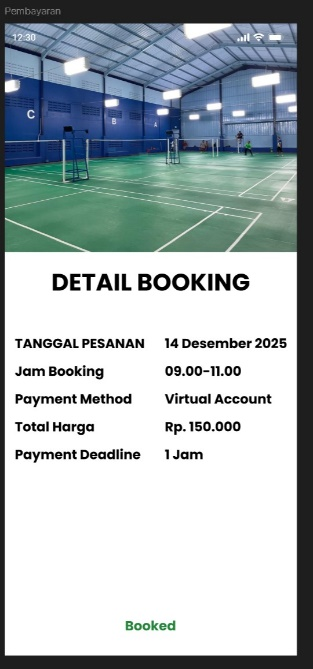
Review booking status
A confirmation-state mockup shows the selected booking and its payment summary.
Equipment purchasingBrowse products, inspect details, and prepare an order · 3 screens
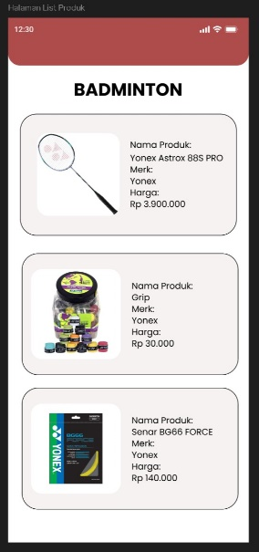
Browse equipment
Find equipment within a selected sport category.
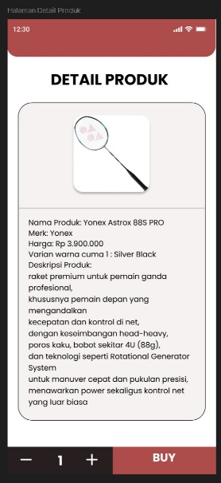
Inspect a product
Review product information and choose a quantity.
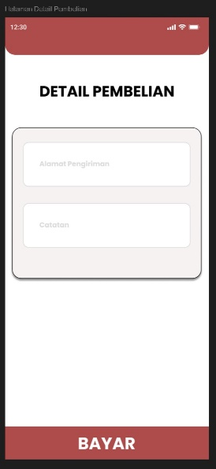
Enter order details
Provide a delivery address and notes before the proposed payment step.
Booking cancellationReview a booking and submit a cancellation request · 2 screens
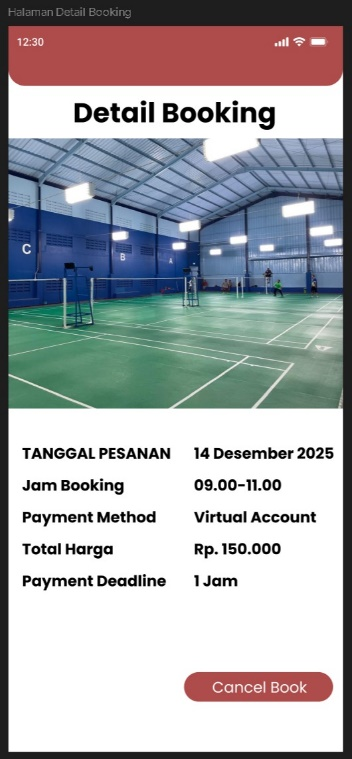
Open a booking
The booking detail screen provides an entry point for cancellation.
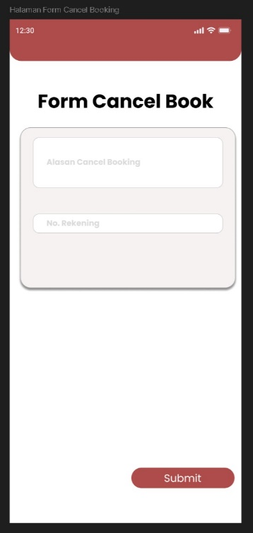
Request cancellation
The proposed form records a cancellation reason and refund account.
Staff confirmationReview and confirm reservations · 3 screens
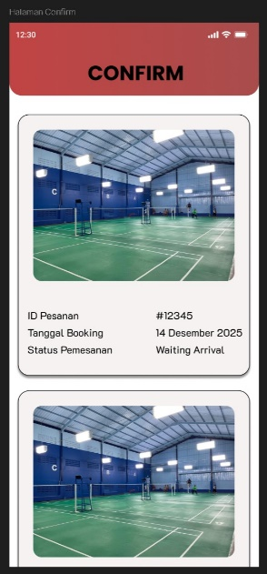
Find a reservation
Staff review reservations awaiting arrival.
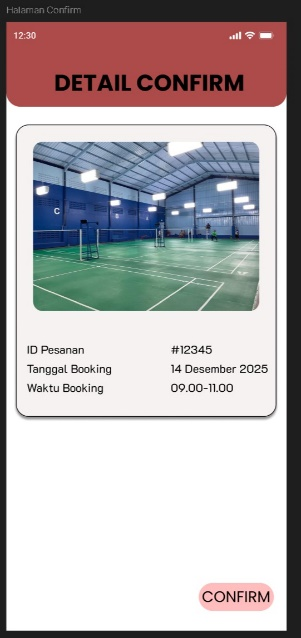
Inspect the reservation
A detail screen exposes the booking information before confirmation.
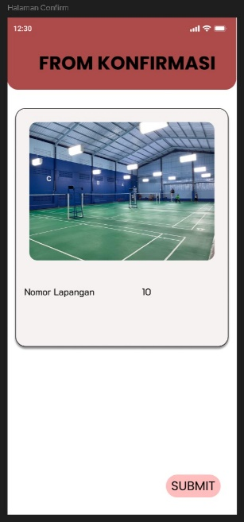
Submit confirmation
The form records the court used for the confirmation.
ADMIN INTERFACE
Bring reporting into view.
A proposed dashboard for booking and equipment-purchase summaries.
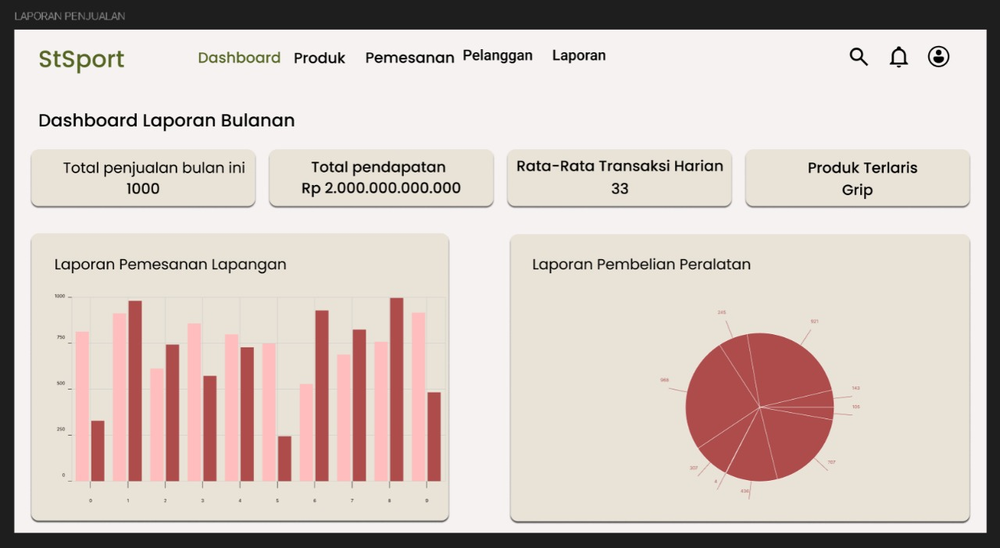
Monthly reporting concept
Original report mockup showing proposed summaries for bookings and equipment purchases. All figures are sample interface content, not measured sales or project outcomes.
PROBLEM ANALYSIS
Start with the process gaps.
Two fishbone diagrams frame the team's problem analysis.
The report identifies manual booking, mismatches in availability information, duplicate reservations, and limited feedback and integration mechanisms. These are the team's case analysis, without a quantified baseline or measured improvement.
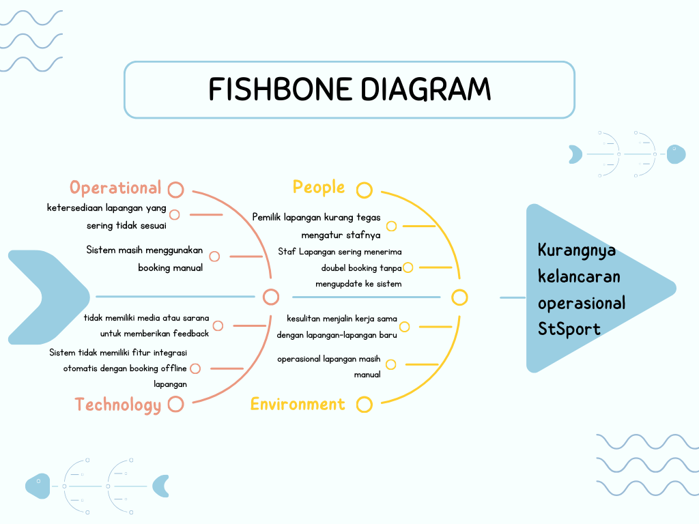
Operational problem analysis
The team groups operational issues under operations, people, technology, and environment.
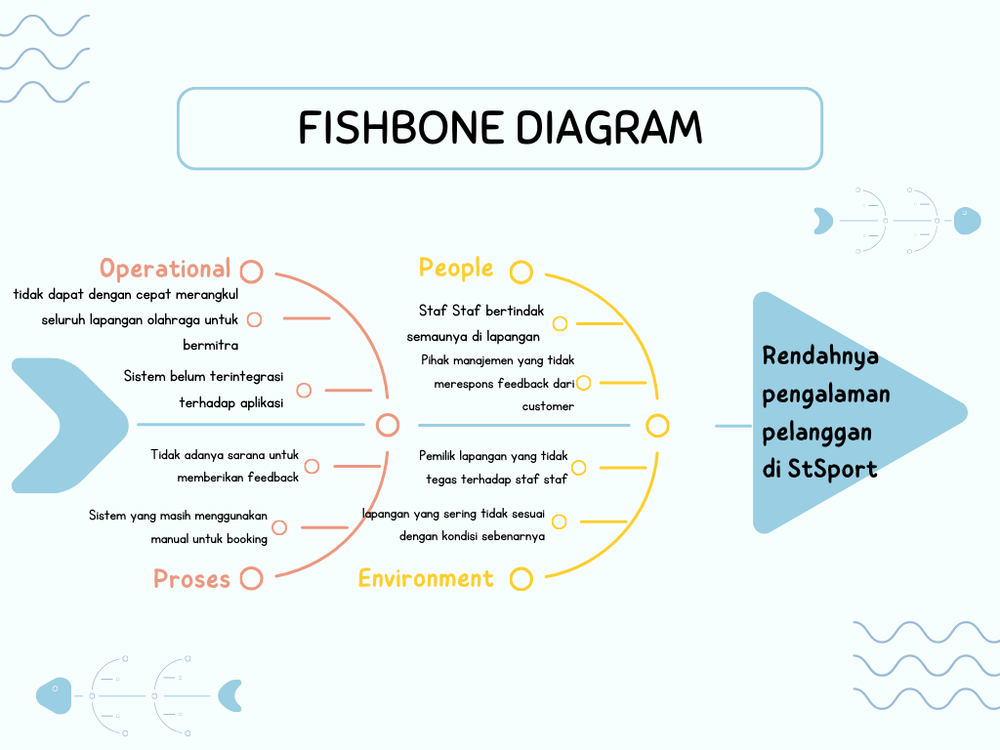
Customer experience analysis
A second diagram considers how fragmented processes and inconsistent information could affect the customer experience.
SYSTEM MODELING
Trace data, roles, and behavior.
Original diagrams document the proposed system from multiple perspectives.
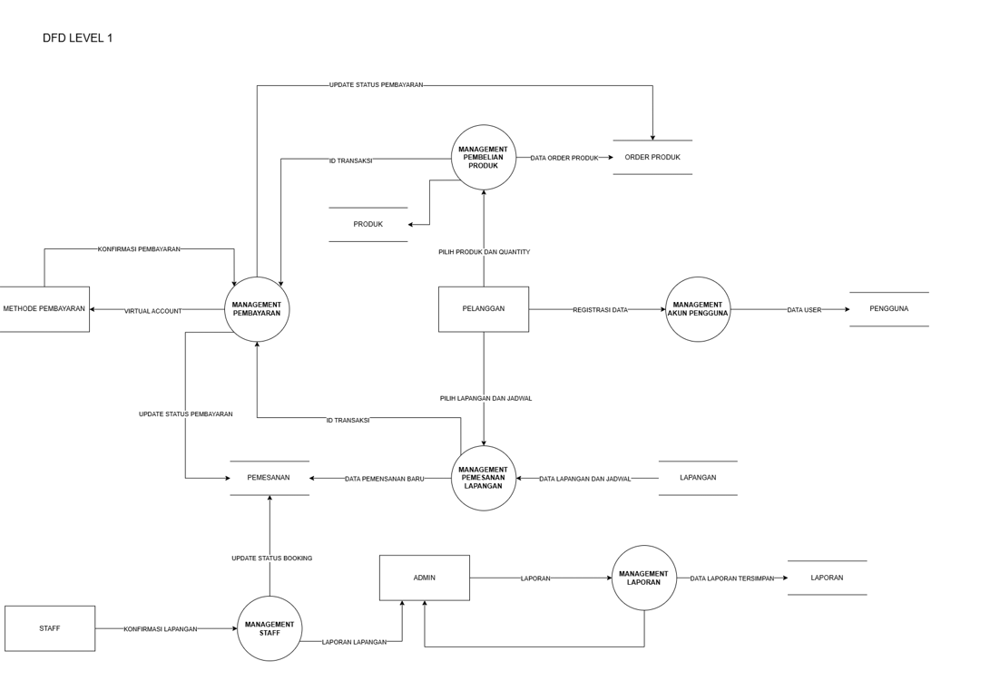
Level 1 data flow diagram
Original Level 1 DFD from the report. It relates system processes to the information exchanged with customers, staff, and administrators.
Use cases and class structureActors, responsibilities, objects, and relationships
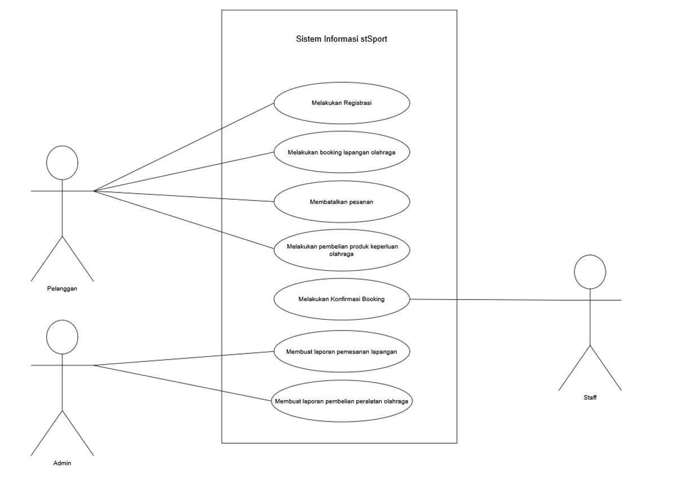
Actors and use cases
Customers register, book, cancel, and purchase equipment. Staff confirm bookings; administrators prepare two types of reports.
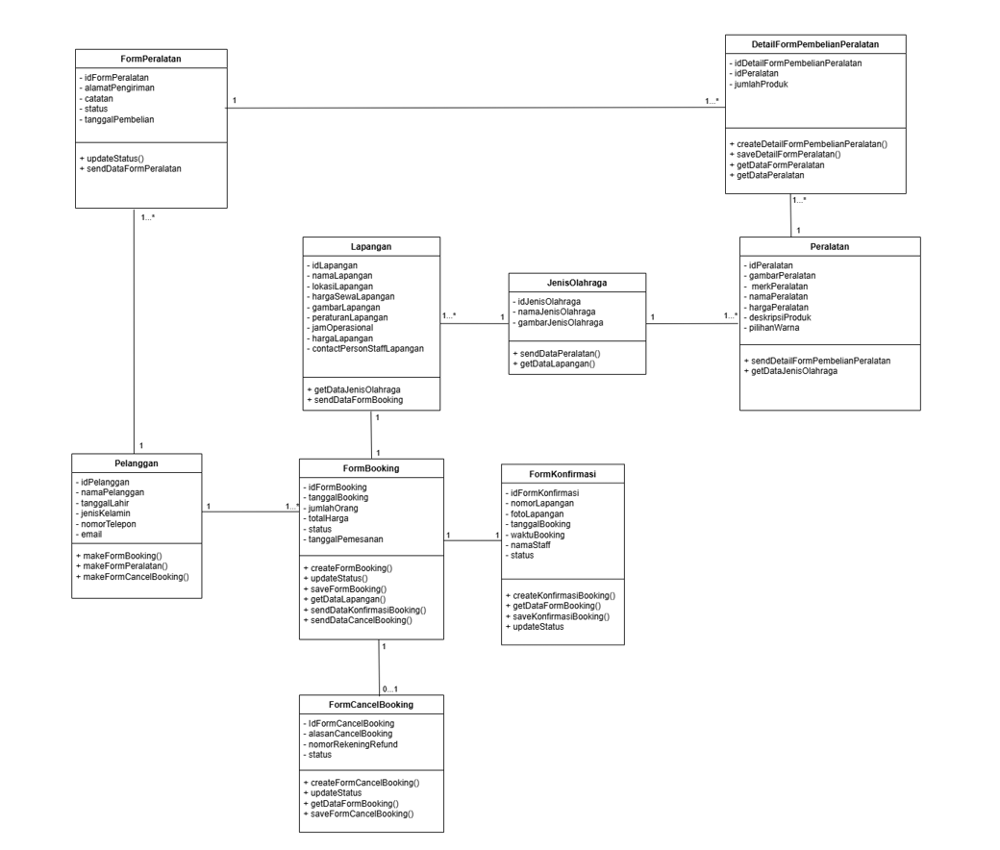
Class structure
The object model records attributes, operations, and relationships for the proposed booking and purchasing workflows.
Booking behaviorSequence, activity, and state transition diagrams
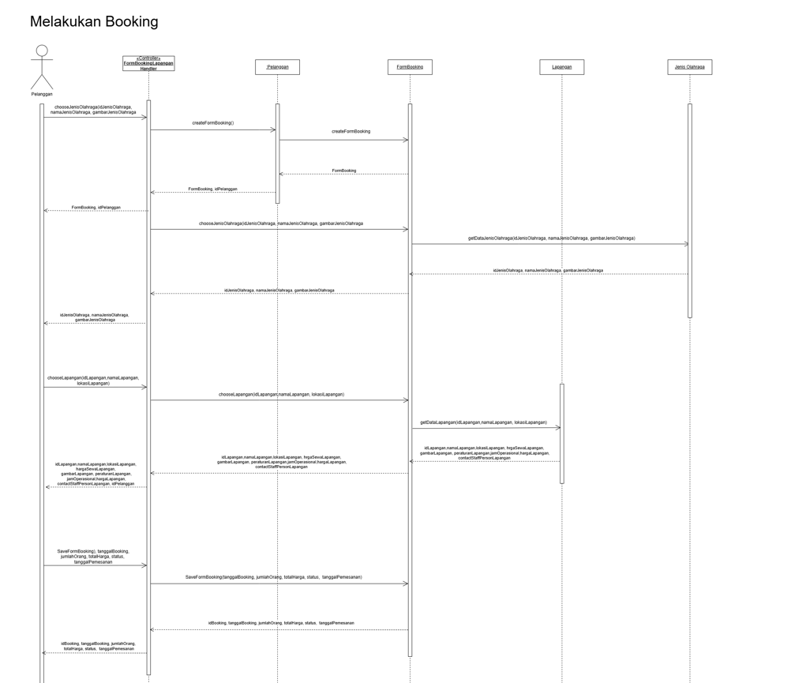
Booking sequence diagram
The sequence documents messages between the objects involved in choosing and recording a court booking.
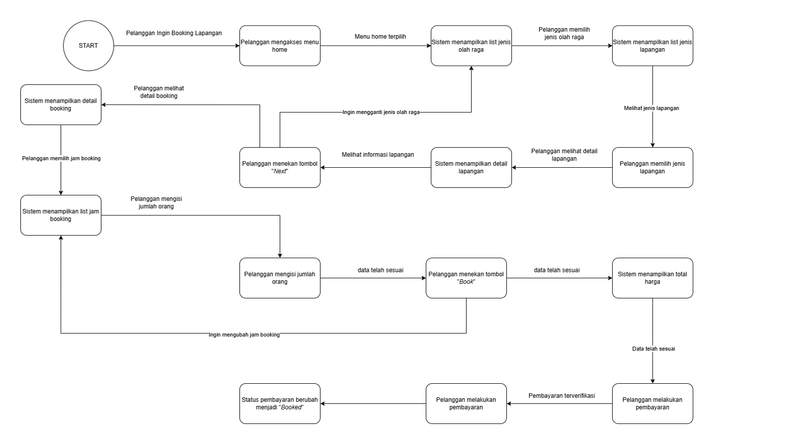
Booking activity diagram
The activity view traces the proposed booking flow and paths for changing a selection.
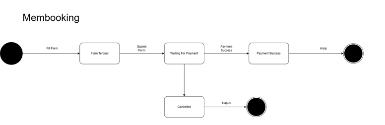
Booking state transition
The state diagram distinguishes form creation, payment waiting, success, and cancellation.
PROPOSED ARCHITECTURE
Separate the interface,
logic, and data.
The report proposes a three-tier client/server structure: the presentation tier displays screens and accepts user input, the application tier handles booking and purchasing logic, and the data tier stores user and transaction records.
This is an architecture proposal supporting the design study. Java, Swift, and Oracle APEX appear in the report's software specification; the supplied files contain design documentation and a Figma file, rather than application source code.
Explore more of my design, data, and systems projects.
Back to all projects